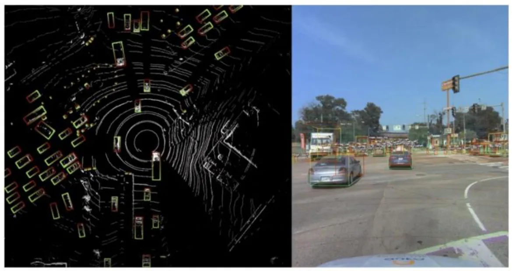
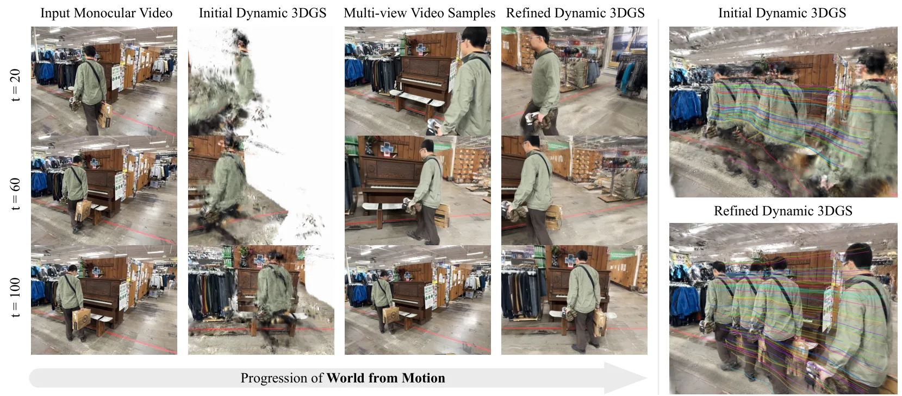
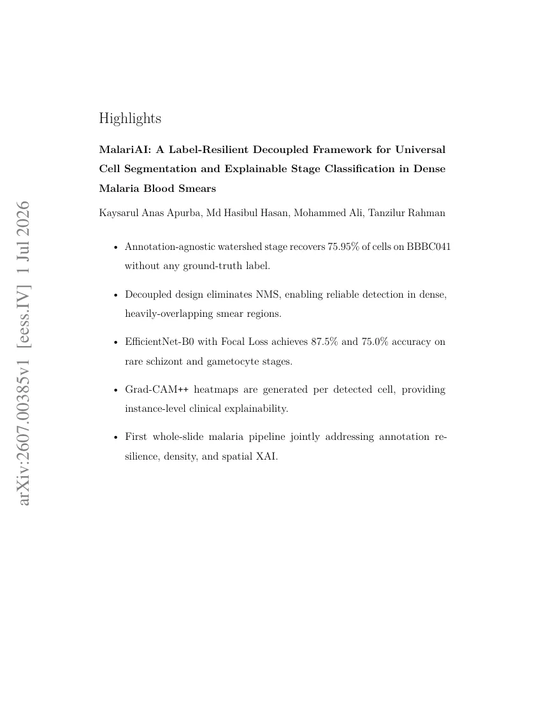
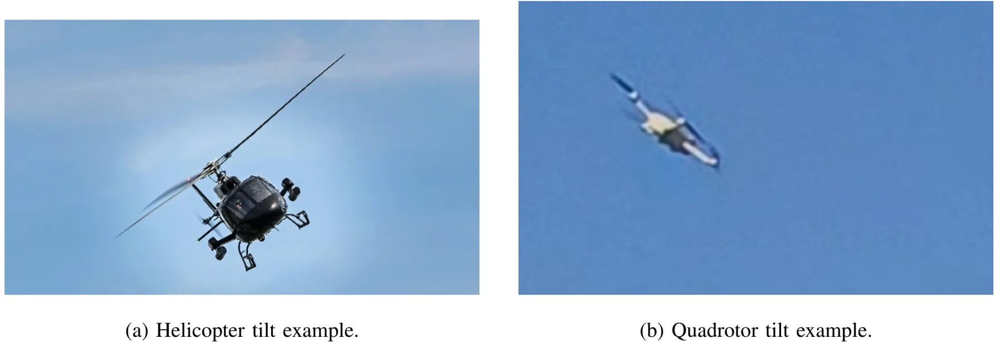
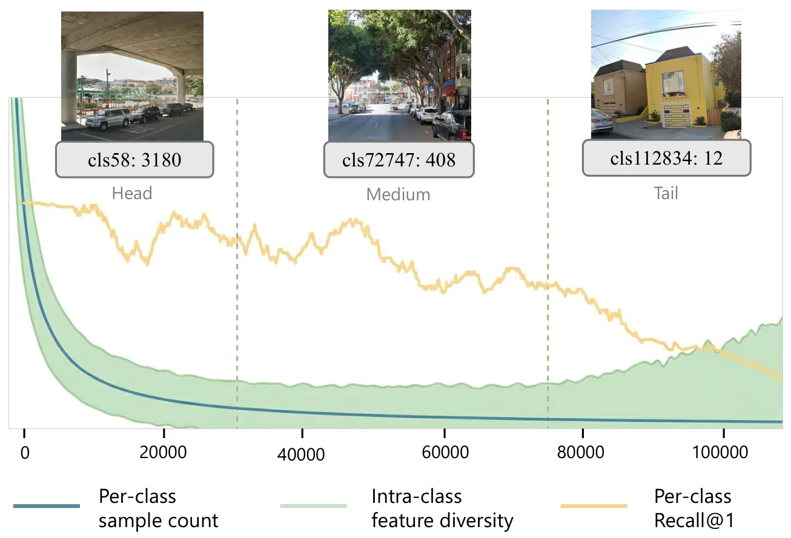
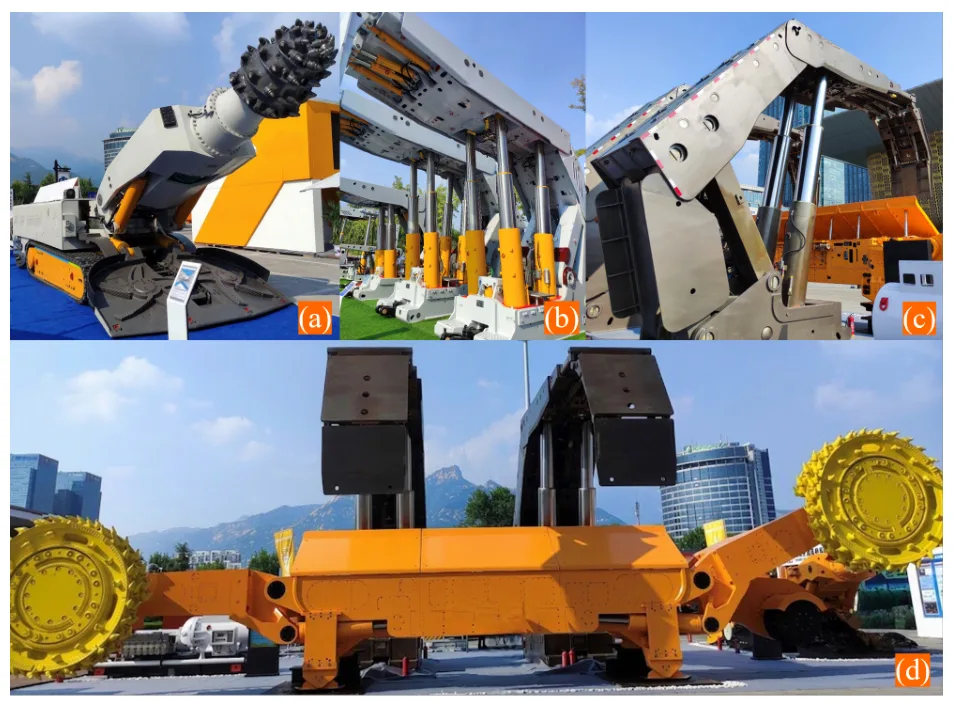

新论文 · 日期 2026-07-02 · score 12 · cs.RO, cs.LG, cs.SY, eess.SP
作者：Eni Solomon Laughter
评分 6.4/10
自动驾驶轨迹行为建模Argoverse 2运动学分类动态对象先验低相关
一句话工作总结：用 Argoverse 2 轨迹把城市车辆减速分成稳定运动学模式，并证明 1 秒早期窗口可较好预测模式。
该文从 Argoverse 2 Sensor 数据集的 234 段城市驾驶日志中抽取 1,219 个持续减速事件，并用 19 维运动学特征做 K-means 模式发现和 bootstrap 稳定性分析，再评估 11 类场景上下文变量对减速模式的影响。四类稳定模式分别是 anticipatory soft、reactive closing、brake-like jerk 和 outlier，bootstrap ARI…
Urban deceleration is one of the most empirically studied yet least taxonomically organized behaviors in car-following research. Recent perception-equipped autonomous-vehicle datasets enable trajectory-anchore…

新论文 · 日期 2026-07-02 · score 10 · cs.CV, cs.AI, cs.GR
作者：Liyuan Zhu, Shengyu Huang, Amrita Mazumdar, Tianye Li, Zan Gojcic, Gordon Wetzstein, Iro Armeni, Shalini De Mello, Alex Trevithick
评分 9.3/10
3DGS4D 重建单目视频动态场景生成式重建三维重建
一句话工作总结：把视频生成模型和动态 3DGS 蒸馏结合，用单目视频恢复更完整一致的 4D Gaussian 场景。
World from Motion 面向单目视频生成可自由渲染的动态 3D Gaussian 表示。方法用 video model 条件化密集、像素对齐的渲染信号，编码外观、几何和沿输入/目标相机轨迹的 3D 场景运动，以修正单目初始重建中的 artifact 并补全缺失区域。训练数据由对齐多视角视频对和动态 3DGS 表示构成，并模拟单目重建 artifact；测试时再把生成的新可见区域和运动蒸馏回单个一致、高质…
We present World from Motion, a method for generating freely renderable dynamic 3D Gaussian representations from monocular videos. Our approach conditions a video model on dense, pixel-aligned renderings that…

新论文 · 日期 2026-07-02 · score 8 · cs.CV, cs.GR
作者：Omer Sela, Inbar Huberman-Spiegelglas, Michael Rotman, Sagie Benaim, Avi Ben-Cohen
评分 5.4/10
视频生成轨迹控制Object tokenAttention动态场景仿真中低相关
一句话工作总结：在视频生成 attention 中直接施加 per-object Gaussian 位置约束，让多个对象更准确沿指定轨迹运动。
TrajLoc 研究 image-to-video generation 中多对象轨迹控制问题。传统方法把多个目标轨迹混在共享 dense conditioning 中，在目标数量增加、路径交叉或遮挡时难以保持身份和轨迹对应。TrajLoc 在 attention 层内为每个 object token 施加严格空间约束：用以目标位置为中心的 Gaussian heatmap 替换该 token 的 cross-at…
Controlling the motion of multiple objects in image-to-video (I2V) generation requires preserving object identities while enforcing adherence to distinct target trajectories. This becomes particularly challeng…

新论文 · 日期 2026-07-02 · score 8 · eess.IV, cs.AI, cs.CV, cs.LG
作者：Sagnik Ghosh
评分 2/10
医学 AI风险预测集成学习特征选择低相关可跳过
一句话工作总结：医学 tabular/ensemble 风险预测论文；与 SLAM/GNSS/三维重建基本无关，建议仅作噪声候选记录。
该文面向急性心肌梗死患者的致死风险预测和关键 biomarker 解释。流程包括缺失值处理、SVMSMOTE/ADASYN/class-weight 处理类别不平衡、wrapper 与 embedded feature selection、特征缩放，以及 Logistic Regression、Random Forest、LightGBM、Bagging SVM 和神经网络组合建模。摘要强调提高诊断速度和可解释性，…
Cardiovascular disease is still one of the main causes of death around the world. Acute myocardial infarction (MI), or heart attack, claims millions of lives each year. MI happens when blood flow to the corona…
新论文 · 日期 2026-07-02 · score 6 · cs.RO
作者：S. Yaqubi, J. Mattila
评分 7.1/10
IEKFSE(3)状态估计IMU编码器Lie group
一句话工作总结：把机械臂 inertial-encoder 状态估计放到 SE(3) invariant filtering 框架下，并给出模块化稳定性分析。
论文为任意 link 数串联刚体机械臂提出完全在 Lie group SE(3) 上构造的 invariant extended Kalman filter。Group-affine 运动学使线性化误差动力学自治，从而 Riccati 方程描述真实误差协方差而不只是局部近似。噪声模型分别处理陀螺仪和加速度计：加速度计通过重力补偿积分给出平移 twist，并让测量协方差随采样间隔缩放；另有 state-depende…
An invariant extended Kalman filter (IEKF) is developed for state estimation of serial rigid manipulators with an arbitrary number of links, formulated entirely within the Lie group SE(3). The group-affine pro…

新论文 · 日期 2026-07-02 · score 6 · eess.IV, cs.AI, cs.CV
作者：Kaysarul Anas Apurba, Md Hasibul Hasan, Mohammed Ali, Tanzilur Rahman
评分 2.6/10
医学图像实例分割弱标注Grad-CAM++低相关可跳过
一句话工作总结：弱标注密集实例分割加 per-cell 可解释分类的医学图像 pipeline；SLAM 主线可低优先级跳过。
MalariAI 是医学显微图像两阶段 pipeline。第一阶段使用 annotation-agnostic distance-transform guided watershed 在完整 1600×1200 血涂片图像中分割所有细胞，避免把未标注细胞当背景训练检测器；第二阶段用 EfficientNet-B0、Focal Loss 和类别反频率权重对 64×64 crop 做阶段分类。每个检测细胞还生成 Gra…
Automated malaria diagnosis from blood smear microscopy is a critical challenge in global health AI; in resource-limited settings, the scarcity of expert microscopists remains the primary bottleneck to timely…

新论文 · 日期 2026-07-02 · score 6 · eess.IV, cs.RO, eess.SP
作者：Minxing Sun, Yao Mao
评分 7.6/10
UAV 跟踪多相机融合视觉测量IMU 自动标注分布式滤波机动预测
一句话工作总结：把图像中的 UAV 倾角当作加速度伪观测，提升多相机分布式跟踪的短时机动预测能力。
该文提出 image-domain tilt constrained distributed fusion，用目标在图像中的 apparent roll/pitch 作为低层机动 cue，缓解图像中心、视线和距离测量对加速度约束较弱导致的短时预测滞后。前端先用同步视频、云台 IMU 和 UAV IMU 弱先验自动生成 oriented bounding box 与 tilt 标签，再训练 YOLO-OBB 在线输出…
Short-horizon prediction is essential for electro-optical UAV tracking, especially when the target is small, maneuvering, or intermittently observed. Image center, line-of-sight, and range measurements provide…

新论文 · 日期 2026-07-02 · score 6 · eess.IV, cs.CV, cs.LG, stat.AP
作者：Lisa Herzog, Jonas Br\"andli, Maurice Schneeberger, Loran Avci, Nordin Dari, Martin H\"ansel, Hakim Baazaoui, Pascal B\"uhler, Susanne Wegener, Beate Sick
评分 2.8/10
医学影像3D CNNGrad-CAMOcclusion多模态预测低相关
一句话工作总结：医学 3D CNN/xAI 论文；可作为多模态模型解释和 confounding 分析参考，但与定位建图无直接关系。
论文把 diffusion-weighted imaging 与临床 tabular 数据结合到 multimodal Deep Transformation Models 中，并把 Grad-CAM 和 Occlusion 适配到依赖 3D CNN 的图像分支，以解释三个月后 functional independence 预测。407 名患者十折交叉验证中，模型 AUC 为 0.81 [0.75, 0.87]。…
Multimodal prediction models based on imaging and clinical data are increasingly used for clinical decision support, yet their interpretability remains limited. We present multimodal Deep Transformation Models…

新论文 · 日期 2026-07-02 · score 5 · cs.CV, cs.AI
作者：Zhiyao Shu, Jiacheng Yang, Yang Lu, Waishan Qiu, Chuan Li, Da Chen
评分 8.2/10
Visual Place Recognition视觉重定位地理长尾城市定位检索数据偏置
一句话工作总结：把城市 VPR 中的地理长尾偏置显式纳入训练和检索，可提升稀疏区域视觉重定位鲁棒性。
该文指出城市级 Visual Place Recognition 数据集中存在严重地理长尾：热门位置图像丰富，冷门区域样本稀少，导致模型系统性偏向高频地点。作者提出 Distribution-Aware Place Recognition（DAPR），作为 model-agnostic plug-in，在训练阶段重新平衡 head/tail class 的梯度贡献；在 classification-retrieva…
Urban-scale Visual Place Recognition (VPR) aims to identify the geographic location of a query image by matching it against a geo-tagged database. While recent methods achieve impressive performance, they over…

新论文 · 日期 2026-07-02 · score 5 · cs.GR, cs.RO
作者：Shengzhe Hou, Xinming Lu, Tianyu Zhang, Changqing Yan, Xingli Zhang
评分 5.8/10
矿山机器人运动学建模闭链机构数字孪生FK/IK机器人仿真
一句话工作总结：为地下矿山机器人闭链执行器机构提供可复用 FK/IK 和描述格式，服务规划、训练和数字孪生。
MineRobot 面向地下矿山机器人中的线性执行器驱动闭链机构和四杆结构，提出执行器中心的建模与 FK/IK 求解框架。作者定义 Mining Robot Description Format（MRDF），用原生语义描述 actuator 和 loop closure；再把平面四杆子结构收缩为 generalized joints，并为每个 actuator 提取 Independent Topologicall…
Underground mining robots are increasingly modeled for planning, operator training, and digital-twin workflows, where reliable actuator-level kinematics is needed to reduce hazardous in situ trials. Unlike typ…